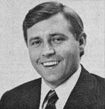
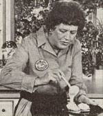

Selected doin's of well-known MOTHER-types from around the world.
There are probably some Georgians who'd like to run Billy Lovett out of town . . . but to many other residents of the Peach State, the young Public Service Commissioner's honesty and forthright opinions come as a welcome relief from the murky and condescending rhetoric folks usually receive from government officials.
Since joining the Commission a little over two years ago, Lovett has leveled a series of unrelenting attacks on the utility companies of his state, and on constant rate hikes. In fact-last spring-he successfully led the opposition to House Bill 1252, which would have approved a $120 million increase in the cost of electricity generated by Georgia Power!
Lovett called that piece of legislation "the greatest hoax since the Yazoo Land Fraud", because it would have required Georgia Power's customers to foot the bill for a number of power plants being constructed by the utility company . . . facilities which, Lovett maintains, are totally unnecessary (as evidenced by Georgia Power's plans to sell the plants to out-of-state utilities).
Not even his own colleagues are safe from Lovett's attacks. In November of 1979, he opposed a move to make the PSC members appointed officials (they are now elected for terms of six years) . . . and even urged that some of the longtime members of the board not be reelected when their terms expired. Several of those officials, he said, had fallen under the influence of the utility lobby and had lost touch with the general public they were supposed to be serving.
Commissioner Lovett is also an outspoken proponent of alternative energy sources. Maintaining that "we must decrease and eventually eliminate our dependence on nonrenewable resources and on activities destructive to the environ ment", he has published a 30-page proposal entitled "Meeting Georgia's Energy Needs in the 1980's". Lovett's energy plan, which he says is "designed for the people, not the utilities", recommends the establishment of a State Energy Efficiency Development (SEED) Authority, which would provide interest-free loans to residential consumers for the construction and use of alternative energy devices.-JM.
Before he was defeated in the November 1980 election, Senator Birch Bayh of Indiana provided a strong voice for ecology and alternative energy in the Senate. In addition to backing such environmental measures as the expansion of the Indiana Dunes National Lakeshore and the protection of national forest lands in his home state, the former legislator helped stop the construction of several proposed dams . . . and was successful in amending a bill that authorizes the Nuclear Regulatory Commission to impose criminal penalties on deliberate violators of safety regulations. Senator Bayh also emerged-during his three terms on Capitol Hill-as a dedicated supporter of humane animal treatment.
Perhaps Bayh's most important activity of the last two years, however, was serving as the Chairman of the National Alcohol Fuels Commission. The board's assignment-during its 18-month life span-was to study alcohol fuel potential and offer specific recommendations to the President and Congress for expanding the country's use of alternative sources of energy.
The committee held public hearings in Washington, sponsored ethanol and methanol research, and urged the government to play a leading role in advocating the use of such fuels. Bayh and ten other Congressional members of the Commission wrote to President Carter last fall, expressing concern over the slow progress of efforts to convert the U.S. to gasohol. The letter pointed out that the Federal government purchased over 340 million gallons of fuel in 1979 to run its enormous motor fleet, of which only 13 million gallons (or 4% of the total) was gasohol. The Commission urged the Chief Executive to beef up the government's purchasing program for the home-brewed fuel . . . and thus stimulate a market for the product.
Senator Bayh, in explaining his reasons for supporting the ethanol movement, says: "Alcohol fuels provide us with the opportunity to declare our energy independence. In fact, I think we ought to be turning our farms into energy factories." -JM.
Julia Child is constantly asked to endorse kitchen and food products . . . but the chef de cuisine extraordinaire declares that she's determined to remain free to speak her own mind. And, although she minces a lot of fresh vegetables, Ms. Child minces no words when it comes to pointing out what she sees as dishonest food magazines ( "one publication has a policy never to criticize its advertisers, so its restaurant reviews are meaningless") . . . poorly designed products ("the Sunbeam mixer has been on the market for 40 years, but it won't even beat egg whites properly") . . . and the National Heart Association ( "since it's supported by a cooking oil company, of course you can't trust the organization's warnings about heart disease and its relation to cholesterol and heavy oils").
The plain-spoken gourmet-who, for many years, starred in her own television cooking show, The French Chef-also objects to the inferior cuts of meat often sold by commercial butchers. (She recommends rabbits as particularly useful homestead livestock, because their meat is "inexpensive, delicious, low in fat, and meatier than chicken".)
Furthermore, while she's quick to criticize items and institutions that she disapproves of, the American-born chef will sometimes lend her name to causes that she considers worthy. For example, Ms. Child-who believes that "every baby should be a wanted child"-sponsored a recent fund-raising affair for Planned Parenthood. -Duane Valentry.
Environmentalist JACQUES-YVES COUSTEAU (interviewed in MOTHER NO. 5) has just produced-along with the staff of the Cousteau Society-The Cousteau Almanac of the Environment, which attempts to catalog all life on earth (Doubleday, $15.95 in paperback, appearing in bookstores in June) .... The faculty at Los Angeles's International College-a nontraditional "one-to-one" university-includes BUCKMINSTER FULLER (interviewed in MOTHER NO. 9) and the poet quoted in our first issue, GARY SNYDER.-JM.
|
 |
 |
|